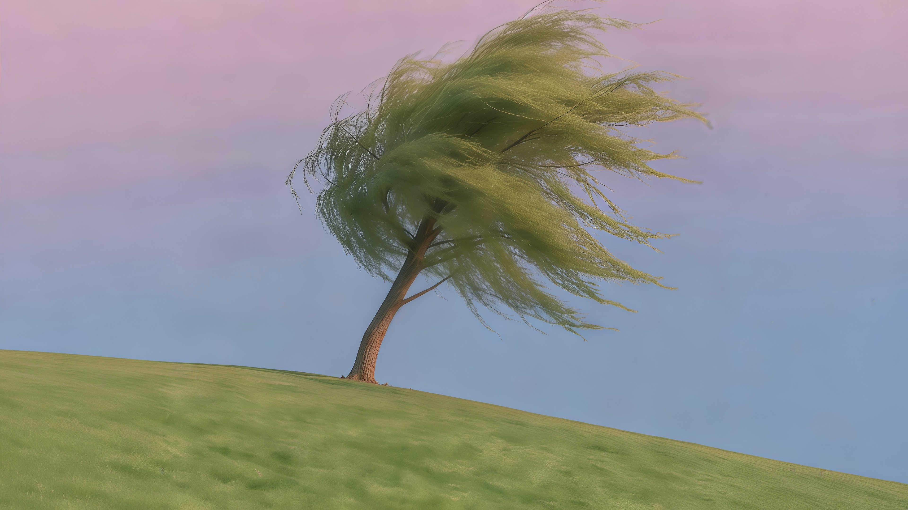

01 / 正在读READING
额尔古纳河右岸
给阅读留一点安静的时间。
迟子建 · 在读
好好生活，积攒温柔
最近，把时间花在这些事上。
给阅读留一点安静的时间。
迟子建 · 在读设计原理与工程实践，从好奇开始。
一起翻开这本开源书 ↗最近喜欢的歌，值得再听一遍。
Paul Russell ↗一个只属于这个浏览器的小本子。
今天有什么值得记住的事？
用 GitHub 登录，留下一句问候。
这里的留言会公开显示。可以聊聊最近读的书、喜欢的歌，或只是说声你好。
如果评论区没有加载出来，也可以去 GitHub 留言 ↗
欢迎回来。今天也要好好生活呀。